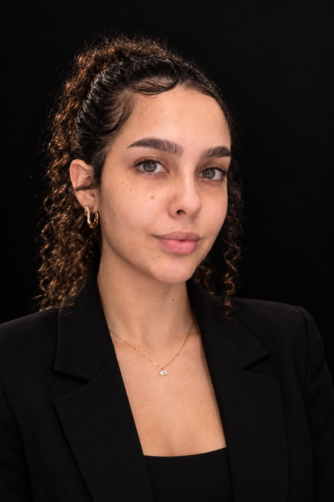
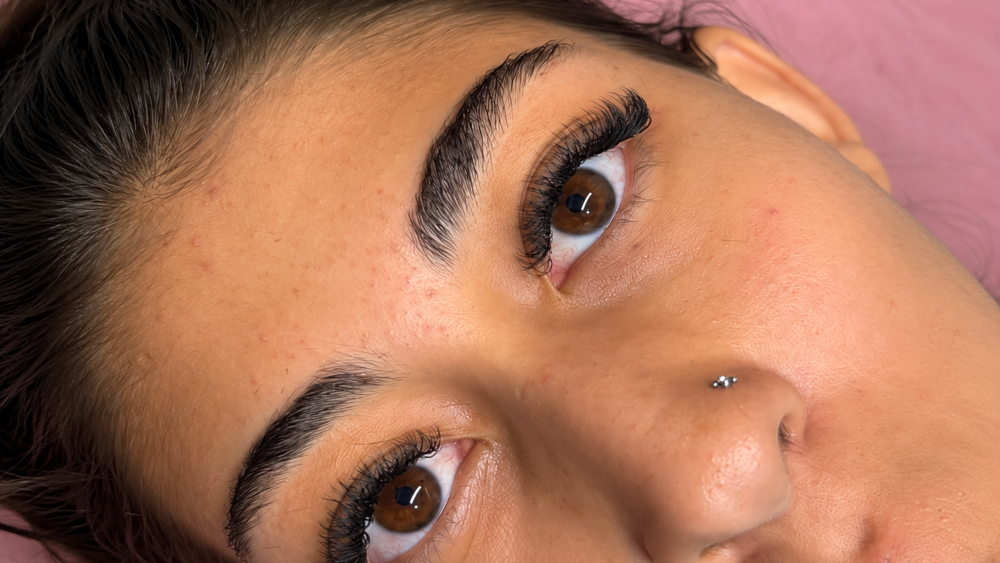
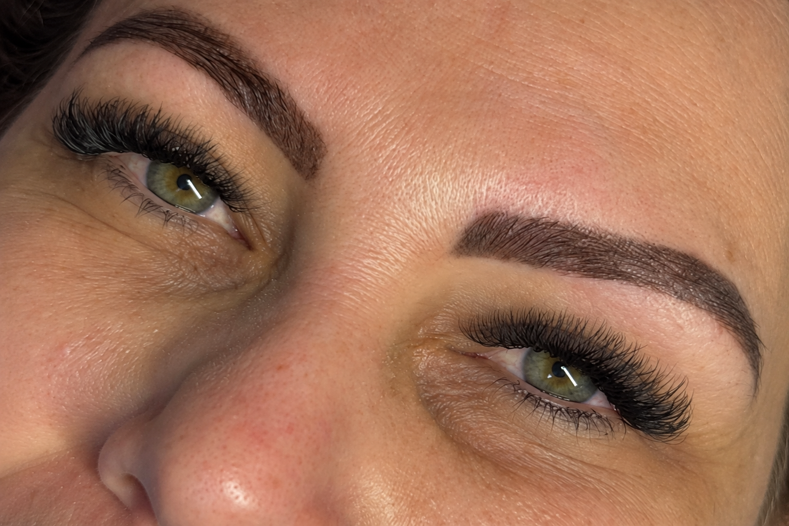
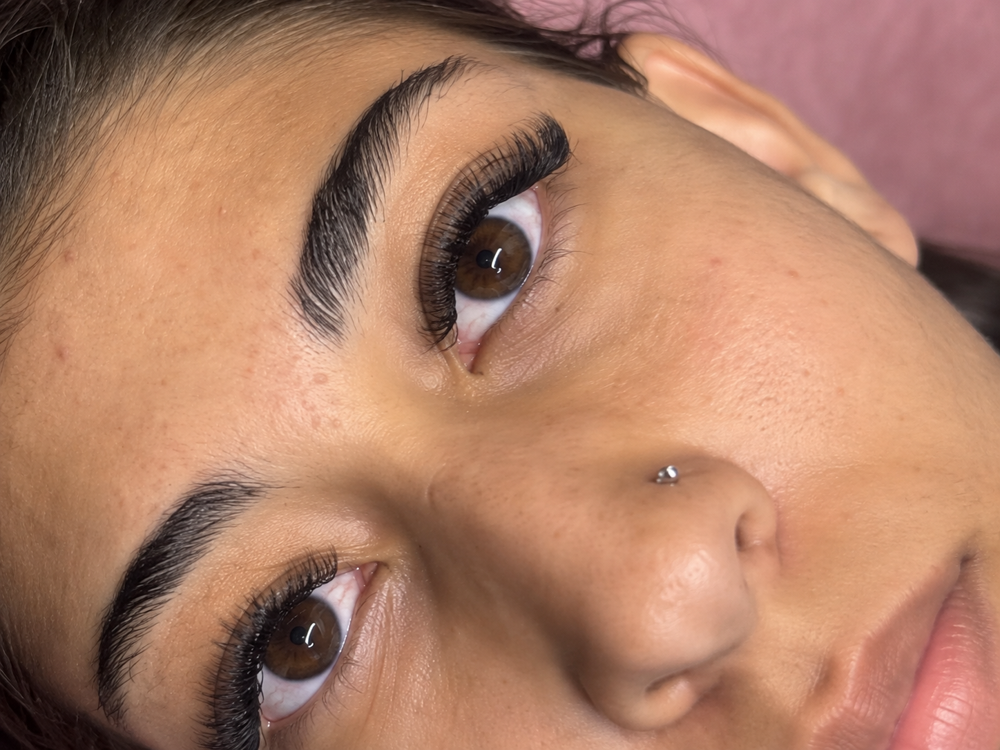
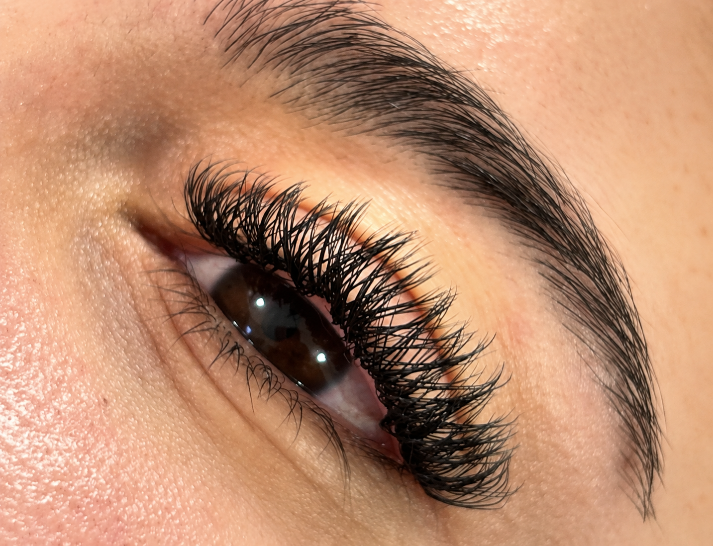
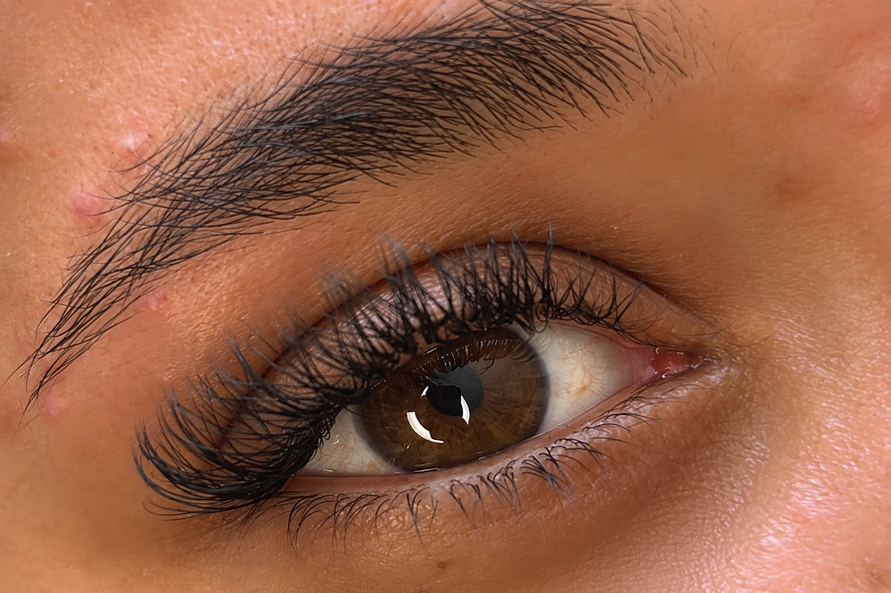

Um olhar só seu
O desenho dos cílios é pensado para valorizar suas características e respeitar a sua preferência.
Extensão de cílios com um olhar atento aos detalhes, para valorizar sua beleza de maneira leve e autêntica.

Olá, eu sou a Marina. Meu trabalho é realçar a beleza do seu olhar com extensão de cílios feita com atenção a cada detalhe.
Mais do que um resultado bonito, cada atendimento é um momento dedicado a você. O efeito é escolhido para conversar com o seu olhar, seu estilo e aquilo que faz você se sentir bem.
Conheça meu InstagramO desenho dos cílios é pensado para valorizar suas características e respeitar a sua preferência.
Uma aplicação cuidadosa faz diferença na leveza, no acabamento e na harmonia do resultado.
Acordar se sentindo bonita é um detalhe que transforma a forma como você se vê.
BELEZA REAL, OLHARES REAIS
Um pouco do meu trabalho, de perto. Cada resultado revela detalhes que fazem toda a diferença.





Resultados podem variar conforme as características de cada pessoa.
Uma conversa simples para entender o que você procura e combinar os detalhes do atendimento.
Chame a Marina pelo WhatsApp e conte como você gostaria de valorizar seu olhar.
Conversem sobre suas preferências para escolher um resultado que combine com você.
Consulte os horários disponíveis e confirme diretamente com a profissional.
Se ainda houver alguma dúvida, a Marina pode orientar você pelo WhatsApp.
Tirar dúvidas pelo WhatsAppConverse com a Marina sobre o resultado que você deseja. A escolha pode considerar suas preferências e as características dos seus cílios naturais.
Envie uma mensagem pelo WhatsApp para saber os valores atualizados e os horários disponíveis.
Os cuidados dependem da técnica utilizada. Ao final do atendimento, confirme com a Marina as orientações específicas para o seu caso.
SEU PRÓXIMO OLHAR COMEÇA AQUI
Entre em contato para tirar suas dúvidas e encontrar um horário para você.
Conversar no WhatsApp